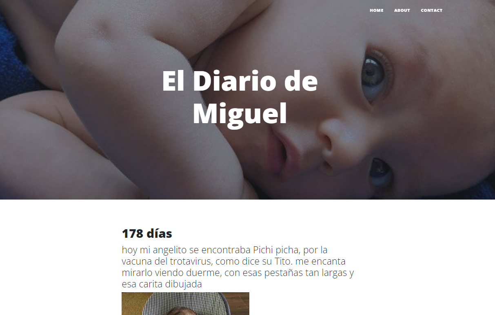
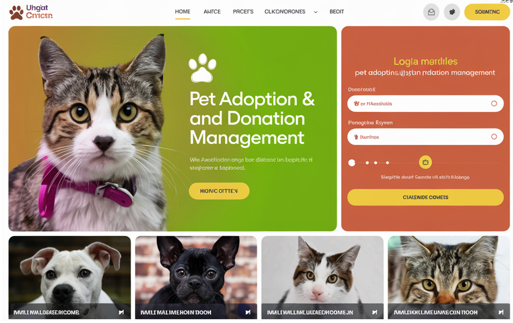

El proyecto utiliza Selenium para automatizar clics en un juego web y comprar artículos según el dinero acumulado. El script ejecuta clics automáticos durante 10 segundos, selecciona la mejor compra disponible, y corre durante 5 minutos antes de detenerse.

Amazon Drop Price
Este script utiliza requests y BeautifulSoup para rastrear el precio de un televisor en Amazon. Si el precio es menor o igual a 1000€, envía un correo electrónico de alerta mediante smtplib. El correo notifica sobre la bajada de precio con el enlace al producto.

Blog
Este código estructura una aplicación web con navegación, secciones dinámicas para contenido específico y un formulario de contacto. Utiliza Jinja2 para la integración dinámica, junto con CSS y JavaScript (Bootstrap y Font Awesome) para mejorar la apariencia y funcionalidad.

Fresh Air Backend
FreshAir Backend es una aplicación escrita en Python que utiliza FastAPI para proporcionar información sobre la calidad del aire en diversas ciudades. La aplicación obtiene datos en tiempo real a través de la API de WAQI. Además, incluye un sistema CRUD en la sección de comentarios para gestionar interacciones con los usuarios.

Animal Shelter
Este proyecto crea el backend de una aplicación web para un refugio de animales, enfocada en facilitar la adopción de mascotas y gestionar donaciones. Los usuarios pueden ver anuncios y donar, mientras que los administradores gestionan mascotas y donaciones. Se utiliza Spring Security y JWT para la seguridad.
Stack Tecnológico: Spring Boot, Spring Web, Spring Data JPA, MySQL, Spring Security, JWT.
PetCare
Este proyecto es un sistema de gestión de pacientes veterinarios desarrollado en Java. Utiliza Spring Boot y MySQL con JPA para operaciones CRUD sobre pacientes y citas, siguiendo el patrón MVC. Se incluyen pruebas unitarias con JUnit 5 y Mockito, y se probaron los endpoints de la API con Postman.
About Me
Trayectoria y Habilidades
Mi experiencia en desarrollo backend y DevOps está respaldada por cualidades como la disciplina, la creatividad y habilidades organizativas, que adquirí a través de mi formación como violinista profesional. Esta formación me ha enseñado a trabajar con precisión y atención al detalle.
- Lenguajes: Java y Python.
- SpringBoot, Spring Web, JPA
- FastApi, Flask, Bootstrap5, WTForms
- MySQL, SQLAlchemy, SQLite
- Junit5, Mokito, Lombok, TDD
About Me
Actitud y Motivación
Mi insaciable curiosidad y compromiso con el aprendizaje continuo me impulsan a enfrentar nuevos desafíos y buscar soluciones innovadoras, aportando una perspectiva única y diversa a cualquier proyecto.
© Untitled. All rights reserved. | Design:
HTML5 UP
.jpg)